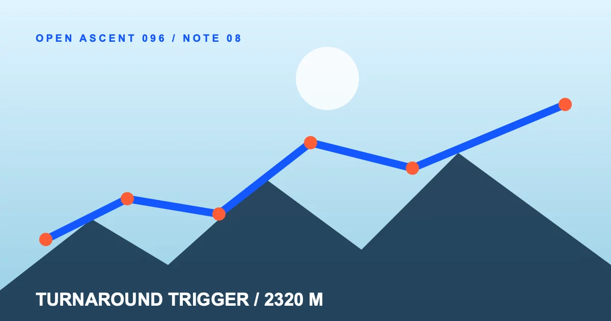

跳到主要内容
决策甲板 / %%READ_TIME%%
%%ARTICLE_TITLE%%
%%ARTICLE_ACCENT%%
%%ARTICLE_LEAD%%
%%COVER_CAPTION%%00 / DATUM%%SECTION_1_TITLE%%
%%SECTION_1_BODY%%
01 / CHANGE%%SECTION_2_TITLE%%
%%SECTION_2_BODY%%
02 / DECISION%%SECTION_3_TITLE%%
%%SECTION_3_BODY%%
03 / HANDOFF%%SECTION_4_TITLE%%
%%SECTION_4_BODY%%
%%FAQ_1_QUESTION%%
%%FAQ_1_ANSWER%%
%%FAQ_2_QUESTION%%
%%FAQ_2_ANSWER%%
展开完整航线清单 · 31 个可换字页面
- index.html
- route-atlas.html
- notes/baseline-marker.html
- notes/source-altimeter.html
- notes/stop-line.html
- notes/grade-break.html
- notes/descent-debt.html
- notes/switchback-note.html
- notes/weather-window.html
- notes/turnaround-trigger.html
- notes/uncertainty-band.html
- notes/waypoint-handoff.html
- notes/revision-route.html
- notes/public-route-pass.html
- routes/baseline-deck.html
- routes/terrain-deck.html
- routes/decision-deck.html
- routes/handoff-deck.html
- flight-instruments.html
- instruments/elevation-ledger.html
- instruments/segment-gradient.html
- instruments/checkpoint-window.html
- instruments/route-order.html
- instruments/handoff-gates.html
- about-observatory.html
- contact-route.html
- relationship-disclosure.html
- route-boundary.html
- privacy-altitude.html
- correction-log.html
- editorial-flightplan.html